Communication · Mode · Éditorial
Lola
Centeno
Freelance en communication et stratégie éditoriale — Paris. MBA Fashion Business, LISAA, certif. LVMH.
Une pratique
hybride.
Étudiante en MBA Fashion Business, je travaille la communication comme un terrain d’expérimentation — entre ligne éditoriale, image et stratégie de marque.
De l’assistanat direction de création chez The Parisian Vintage & The Off-Note à la vente conseil chez Isabel Marant, j’ai construit une pratique qui mêle recherche artistique, coordination de shootings, rédaction bilingue, CRM et veille concurrentielle.
Mes archives — trend books, journaux digitaux, analyses magazine — traduisent une curiosité analytique pour les mécanismes du commerce, la psychologie consommateur et les tendances émergentes.
« La communication n’a de sens que si elle témoigne fidèlement de son époque. »
Lola Centeno
Disponible en téléchargement ou consultation directe.
{kind=link}
Regard
éditorial.
Extraits du book, shootings photo et recherches visuelles — formats réduits, pensés pour une lecture légère sur le site.
Book — Lola Centeno Real
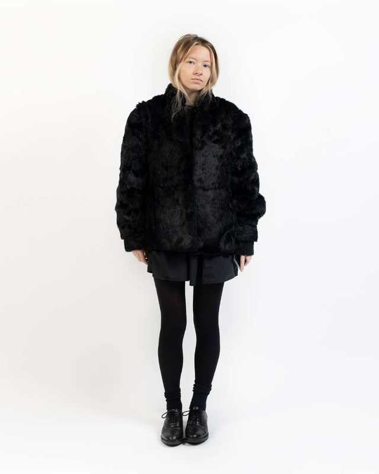
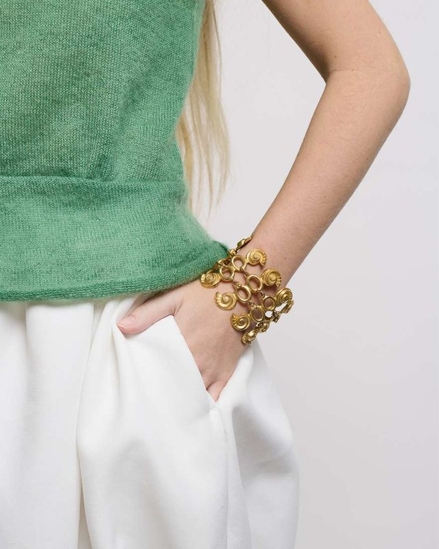
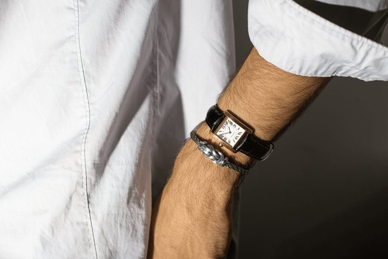
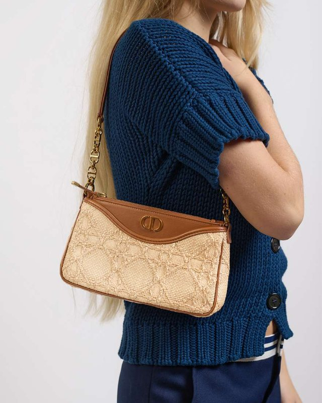
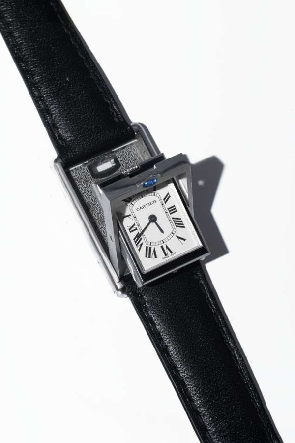
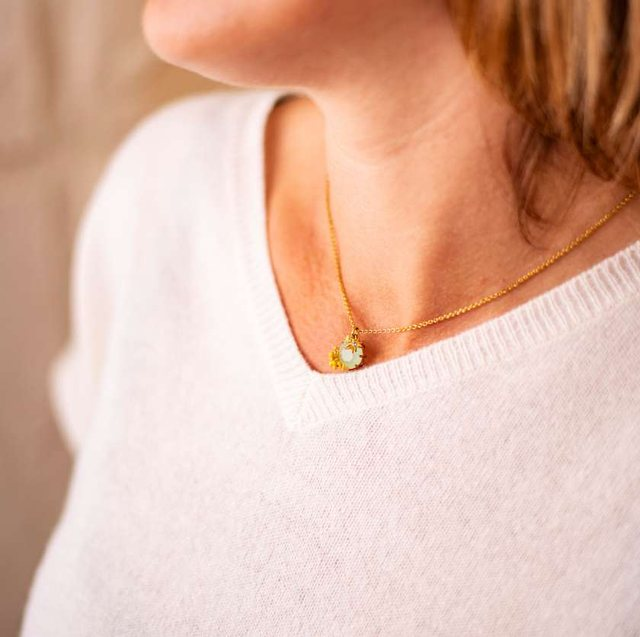
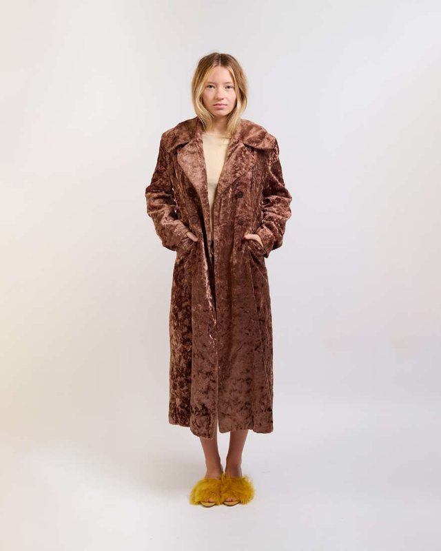
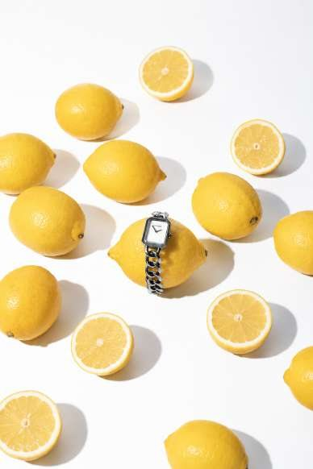
Shooting photo
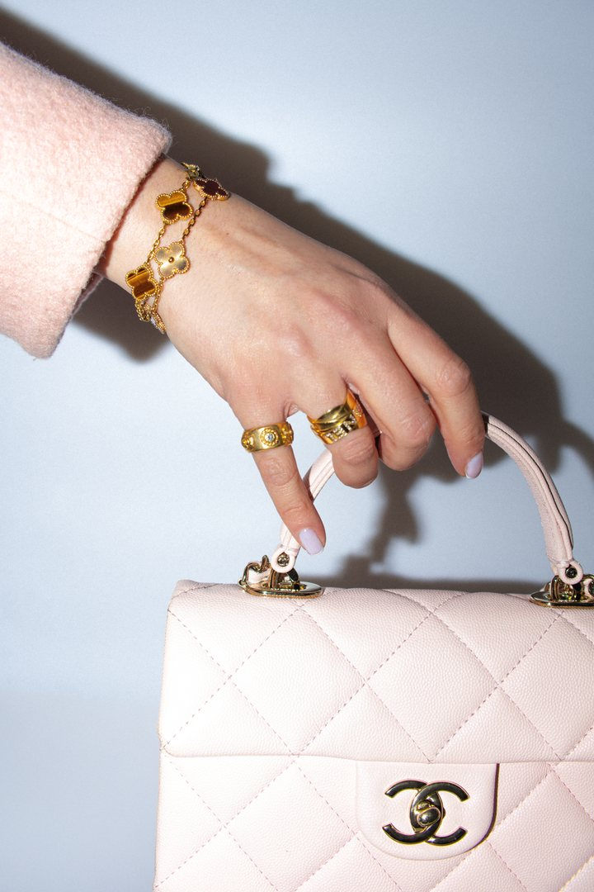
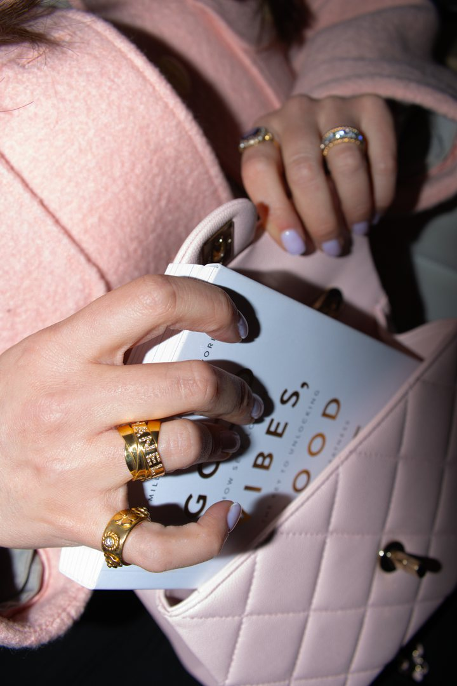
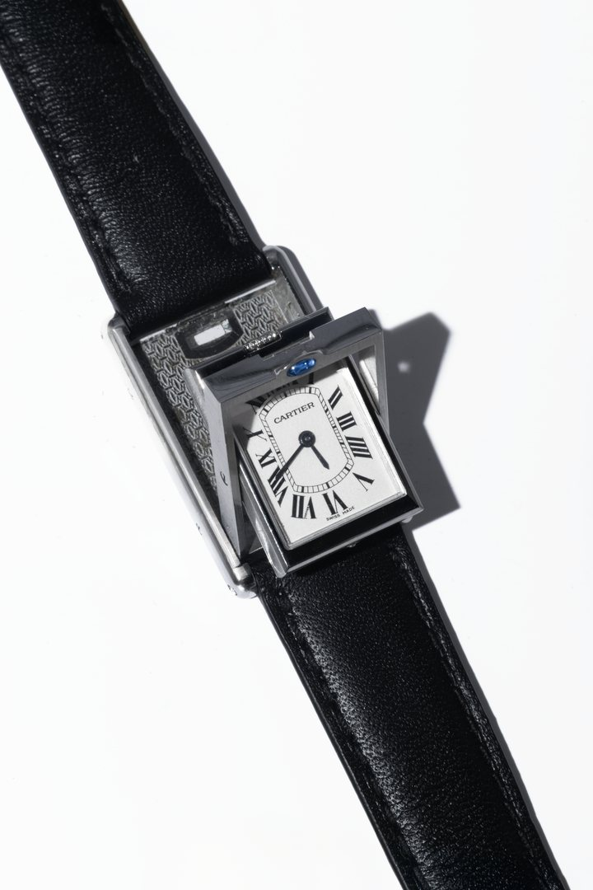
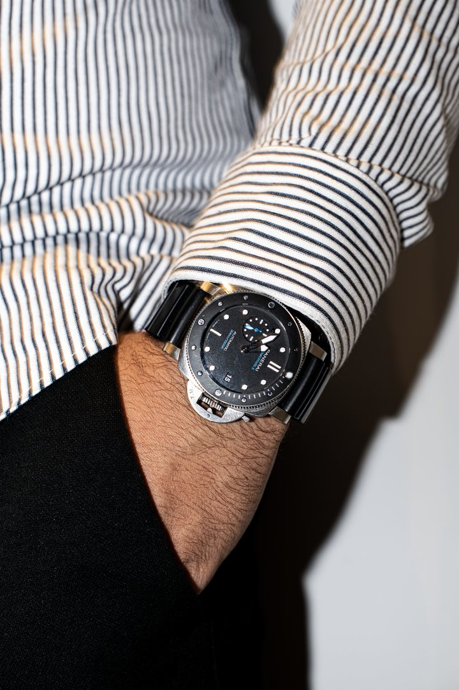
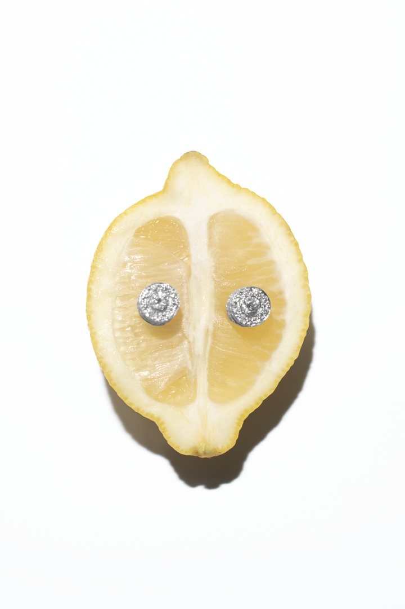
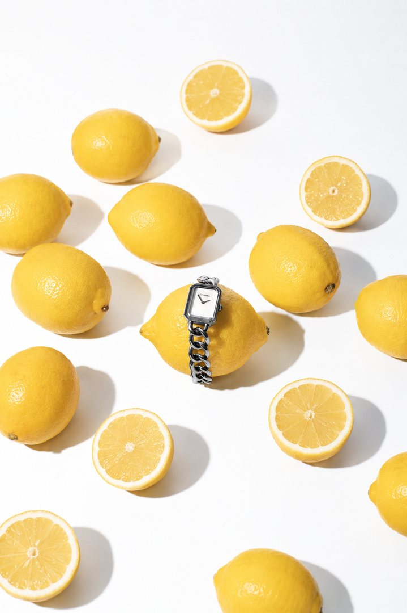
Recherche visuelle
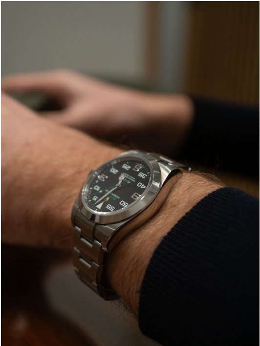
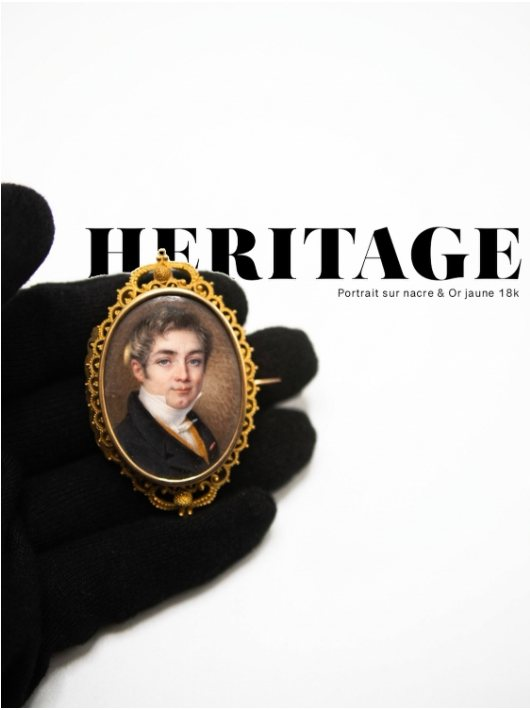
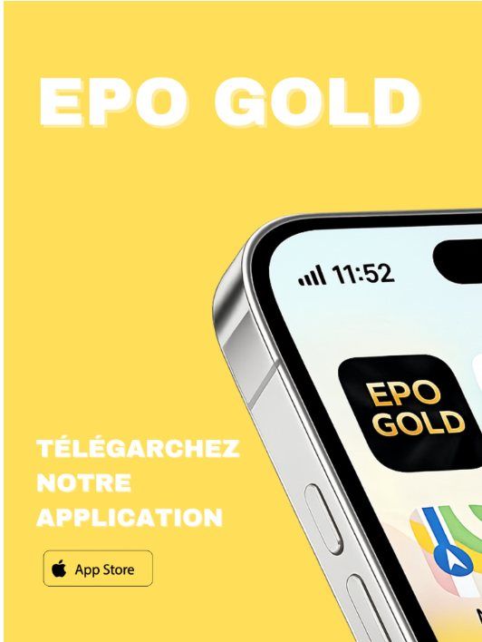
Version complète du portfolio, 5 pages · 2026.
Parcours
& terrain.
-
2024
Assistante directrice de création
The Parisian Vintage & The Off-Note — Freelance, Paris
Concept design, campagnes créatives, coordination visuelle, suivi shootings, recherche artistique.
-
2024
Conseillère de vente
Isabel Marant — Stage, Paris
Conseil personnalisé, stock, merchandising, CRM, connaissance produit approfondie.
-
2024
Hôtesse d’accueil polyvalente
La Fabrica — Freelance, Paris
Accueil client, gestion des espaces et stocks, réservations, coordination sous pression.
-
2023
Habilleuse de défilé
Fashion Week AW — Celinekwan, Paris
Organisation backstage, communication et attention au détail sur les looks.
-
2023 — 2026
MBA Fashion Business
LISAA Mode Paris — Fashion & Luxury Marketing
Certification LVMH : Operations & Supply Chain + Retail & Customer Experience.
Travaux &
publications.
Sélection de projets éditoriaux — chaque document s’ouvre en lecture, sans aperçu plein écran sur la page.
Travaillons
ensemble.
Disponible pour missions freelance en communication, création de contenus éditoriaux, veille tendances et support créatif mode & luxe.
lolacenteno03@gmail.com